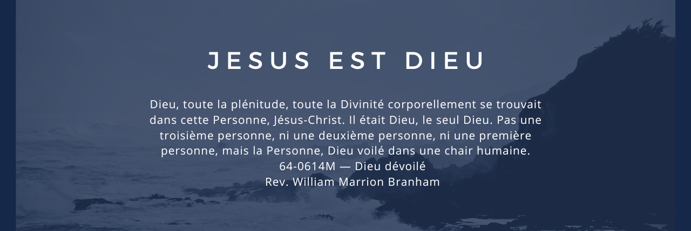

.png)
La seule façon pour vous de dire que Jésus est le Christ, c’est quand le Saint-Esprit entre en vous et rend témoignage, et témoigne Lui-même “qu’Il est le Fils de Dieu”. C’est la seule façon pour vous de connaître la résurrection, c’est quand le Saint-Esprit rend témoignage. “Quand Lui, le Saint-Esprit sera venu, Il témoignera de Moi, Il vous montrera les choses à venir; Il vous rappellera ces choses que Je vous ai dites.” Vous ne le trouverez jamais à l’école. Voyez? Lui vous rappellera ces choses.
Et Qui est Jésus-Christ? La Parole. “Au commencement était la Parole, et la Parole était avec Dieu, et la Parole était Dieu. Et la Parole a été faite chair et Elle a habité parmi nous.” “Jésus-Christ, le même hier, aujourd’hui, et éternellement.”
"Jésus lui dit: Je suis le chemin, la vérité, et la vie. Nul ne vient au Père que par moi."
(la révélation spirituelle montrant qui est Dieu, qui est Jésus, et qu’Il est la révélation de Dieu, Dieu fait chair et révélé au monde. Il était dans le monde; Dieu était en Christ, réconciliant le monde avec Lui-même et révélant ce que Dieu était, dans un corps de chair)…” “Tu es le Christ, le Oint, le Fils de Dieu.”

Confie-toi à l’Éternel de tout ton cœur, et ne t’appuie pas sur ta propre intelligence. Dans toutes tes voies, reconnais-le, et il dirigera tes sentiers.

Mon âme, bénis l’Éternel, Et n’oublie aucun de ses bienfaits! C’est lui qui pardonne toutes tes iniquités, Qui guérit toutes tes maladies

Mais cherchez d’abord son royaume et sa justice, et toutes ces choses vous seront données aussi
"Car un enfant nous est né, un fils nous est donné, Et la domination reposera sur son épaule; On l’appellera Admirable, Conseiller, Dieu puissant, Père éternel, Prince de la paix.
" Tout le monde le méprisait et l’évitait. C’était un homme qui souffrait, habitué à la douleur. Il était comme quelqu’un que personne ne veut regarder. Nous le méprisions, nous le comptions pour rien. Pourtant, ce sont nos maladies qu’il supportait, c’est de notre souffrance qu’il s’était chargé. Et nous, nous pensions : c’est Dieu qui le punit de cette façon, c’est Dieu qui le frappe et l’abaisse. Mais il était blessé à cause de nos fautes, il était écrasé à cause de nos péchés. La punition qui nous donne la paix est tombée sur lui. Et c’est par ses blessures que nous sommes guéris."
" Lui, il est l’égal de Dieu, parce qu’il est Dieu depuis toujours. Pourtant, cette égalité, il n’a pas cherché à la garder à tout prix pour lui. Mais tout ce qu’il avait, il l’a laissé. Il s’est fait serviteur, il est devenu comme les hommes, et tous voyaient que c’était bien un homme. Il s’est fait plus petit encore : il a obéi jusqu’à la mort, et il est mort sur une croix ! C’est pourquoi Dieu l’a placé très haut et il lui a donné le nom qui est au-dessus de tous les autres noms. Alors tous ceux qui sont dans le ciel, sur la terre et chez les morts tomberont à genoux quand ils entendront le nom de Jésus. Et tous reconnaîtront ceci : Jésus-Christ est le Seigneur, pour la gloire de Dieu le Père."